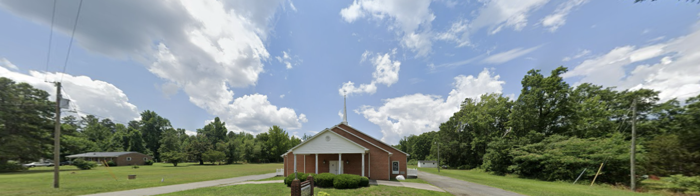

"The Church with a Big Heart" — changing lives in an unchanging world. Whether you're new to faith or you've walked with the Lord for years, there's a place for you here.

Hester Grove Baptist Church has served the Hurdle Mills community as a place of worship, fellowship, and faith for generations. We believe in the power of God's Word to transform hearts, strengthen families, and build a legacy of faith for generations to come.
Read Our Story